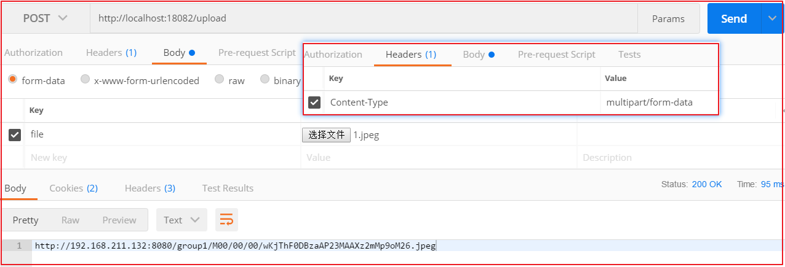

FastDFS简介 FastDFS体系结构 FastDFS是一个开源的轻量级分布式文件系统 ，它对文件进行管理，功能包括：文件存储、文件同步、文件访问（文件上传、文件下载）等，解决了大容量存储和负载均衡的问题。特别适合以文件为载体的在线服务，如相册网站、视频网站等等。
FastDFS为互联网量身定制，充分考虑了冗余备份、负载均衡、线性扩容等机制，并注重高可用、高性能等指标，使用FastDFS很容易搭建一套高性能的文件服务器集群提供文件上传、下载等服务。
FastDFS 架构包括 Tracker server 和 Storage server。客户端请求 Tracker server 进行文件上传、下载，通过Tracker server 调度最终由 Storage server 完成文件上传和下载。
Tracker server 作用是负载均衡和调度，通过 Tracker server 在文件上传时可以根据一些策略找到Storage server 提供文件上传服务。可以将 tracker 称为追踪服务器或调度服务器。Storage server 作用是文件存储，客户端上传的文件最终存储在 Storage 服务器上，Storageserver 没有实现自己的文件系统而是利用操作系统的文件系统来管理文件。可以将storage称为存储服务器。
上传流程
客户端上传文件后存储服务器将文件 ID 返回给客户端，此文件 ID 用于以后访问该文件的索引信息。文件索引信息包括：组名，虚拟磁盘路径，数据两级目录，文件名。
组名 ：文件上传后所在的 storage 组名称，在文件上传成功后有storage 服务器返回，需要客户端自行保存。
虚拟磁盘路径 ：storage 配置的虚拟路径，与磁盘选项store_path*对应。如果配置了
store_path0 则是 M00，如果配置了 store_path1 则是 M01，以此类推。
数据两级目录 ：storage 服务器在每个虚拟磁盘路径下创建的两级目录，用于存储数据
文件。
文件名 ：与文件上传时不同。是由存储服务器根据特定信息生成，文件名包含：源存储
服务器 IP 地址、文件创建时间戳、文件大小、随机数和文件拓展名等信息。
FastDFS搭建 安装FastDFS镜像 拉取镜像
1 docker pull morunchang/fastdfs
运行tracker
1 docker run -d --name tracker --net=host morunchang/fastdfs sh tracker.sh
运行storage
1 docker run -d --name storage --net=host -e TRACKER_IP=192.168.211.132:22122 -e GROUP_NAME=group1 morunchang/fastdfs sh storage.sh
使用的网络模式是–net=host, 192.168.211.132是宿主机的IP
group1是组名，即storage的组
如果想要增加新的storage服务器，再次运行该命令，注意更换 新组名
配置Nginx Nginx在这里主要提供对FastDFS图片访问的支持，Docker容器中已经集成了Nginx，我们需要修改nginx的配置,进入storage的容器内部，修改nginx.conf
1 docker exec -it storage /bin/bash
进入后
1 vi /etc/nginx/conf/nginx.conf
添加以下内容
上图配置如下：
1 2 3 4 location ~ /M00 { root /data/fast_data/data; ngx_fastdfs_module; }
禁止缓存：
1 add_header Cache-Control no-store;
退出容器
重启storage容器
查看启动容器docker ps
1 2 9f2391f73d97 morunchang/fastdfs "sh storage.sh" 12 minutes ago Up 12 seconds storage e22a3c7f95ea morunchang/fastdfs "sh tracker.sh" 13 minutes ago Up 13 minutes tracker
开启启动设置
1 2 docker update --restart=always tracker docker update --restart=always storage
application.yml配置 在resources文件夹下创建application.yml
1 2 3 4 5 6 7 8 9 10 11 12 13 14 15 16 17 18 spring: servlet: multipart: max-file-size: 10MB max-request-size: 10MB application: name: file server: port: 18082 eureka: client: service-url: defaultZone: http://127.0.0.1:7001/eureka instance: prefer-ip-address: true feign: hystrix: enabled: true
max-file-size是单个文件大小，max-request-size是设置总上传的数据大小
测试类
1 2 3 4 5 6 7 8 9 10 11 12 13 14 15 16 17 18 19 20 21 22 23 24 25 26 27 28 29 30 31 32 33 34 35 36 37 38 39 40 41 42 43 44 45 46 47 48 49 50 51 52 53 54 55 56 57 58 59 60 61 62 63 64 65 66 67 68 69 70 71 72 73 74 75 76 77 78 79 80 81 82 83 84 85 86 87 88 public class FastdfsTest @Test public void upload () throws Exception ClientGlobal.init("E:\\javaProject\\project\\changgou\\changgou-parent\\changgou-service\\changgou-service-file\\src\\main\\resources\\fdfs_client.conf" ); TrackerClient trackerClient = new TrackerClient(); TrackerServer trackerServer = trackerClient.getConnection(); StorageClient storageClient = new StorageClient(trackerServer, null ); String[] jpgs = storageClient.upload_file("F:\\Test\\img\\2021-2\\reol3.jpg" , "jpg" , null ); for (String jpg : jpgs) { System.out.println(jpg); } } @Test public void download () throws Exception ClientGlobal.init("E:\\javaProject\\project\\changgou\\changgou-parent\\changgou-service\\changgou-service-file\\src\\main\\resources\\fdfs_client.conf" ); TrackerClient trackerClient = new TrackerClient(); TrackerServer trackerServer = trackerClient.getConnection(); StorageClient storageClient = new StorageClient(trackerServer, null ); byte [] bytes = storageClient.download_file("group1" , "M00/00/00/wKjThGBuvYyANJ7LAAPjQtPw71o413.jpg" ); File file = new File("F:\\Test\\1234.jpg" ); FileOutputStream fileOutputStream = new FileOutputStream(file); BufferedOutputStream bufferedOutputStream = new BufferedOutputStream(fileOutputStream); bufferedOutputStream.write(bytes); bufferedOutputStream.close(); fileOutputStream.close(); } @Test public void delete () throws Exception ClientGlobal.init("E:\\javaProject\\project\\changgou\\changgou-parent\\changgou-service\\changgou-service-file\\src\\main\\resources\\fdfs_client.conf" ); TrackerClient trackerClient = new TrackerClient(); TrackerServer trackerServer = trackerClient.getConnection(); StorageClient storageClient = new StorageClient(trackerServer, null ); int group1 = storageClient.delete_file("group1" , "M00/00/00/wKjThGCs87OAdGvvAAO8diVoK2M143.jpg" ); System.out.println(group1); } @Test public void getFileInfo () throws Exception ClientGlobal.init("E:\\javaProject\\project\\changgou\\changgou-parent\\changgou-service\\changgou-service-file\\src\\main\\resources\\fdfs_client.conf" ); TrackerClient trackerClient = new TrackerClient(); TrackerServer trackerServer = trackerClient.getConnection(); StorageClient storageClient = new StorageClient(trackerServer, null ); FileInfo group1 = storageClient.get_file_info("group1" , "M00/00/00/wKjThGCs87OAdGvvAAO8diVoK2M143.jpg" ); System.out.println(group1); } }
启动类 创建com.yuefeng包，创建启动类FileApplication
1 2 3 4 5 6 7 8 @SpringBootApplication(exclude={DataSourceAutoConfiguration.class}) @EnableEurekaClient public class FileApplication public static void main (String[] args) SpringApplication.run(FileApplication.class); } }
这里禁止了DataSource的加载创建。
文件上传 文件信息封装 文件上传一般都有文件的名字、文件的内容、文件的扩展名、文件的md5值、文件的作者等相关属性，我们可以创建一个对象封装这些属性，代码如下：
创建com.yuefeng.file.FastDFSFile代码如下：
1 2 3 4 5 6 7 8 9 10 11 12 13 14 15 16 17 18 19 20 21 22 23 24 25 26 27 28 29 30 31 32 public class FastDFSFile implements Serializable private String name; private byte [] content; private String ext; private String md5; private String author; public FastDFSFile (String name, byte [] content, String ext, String md5, String author) this .name = name; this .content = content; this .ext = ext; this .md5 = md5; this .author = author; } public FastDFSFile (String name, byte [] content, String ext) this .name = name; this .content = content; this .ext = ext; } public FastDFSFile () } }
(可选)测试文件相关操作:
1 2 3 4 5 6 7 8 9 10 11 12 13 14 15 16 17 18 19 20 21 22 23 24 25 26 27 28 29 30 31 32 33 34 35 36 37 38 39 40 41 42 43 44 45 46 47 48 49 50 51 52 53 54 55 56 57 58 59 60 61 62 63 64 65 66 67 68 69 70 71 72 73 74 75 76 77 78 79 80 81 82 83 84 85 86 87 88 89 90 91 92 93 94 95 96 97 98 99 100 101 102 103 104 105 106 107 108 package com.yuefeng.file.test;import org.csource.fastdfs.*;import org.junit.Test;import java.io.*;import java.net.InetSocketAddress;public class FastdfsClientTest @Test public void upload () throws Exception ClientGlobal.init("C:\\Users\\Administrator\\IdeaProjects\\beike\\changgou\\changgou-service\\changgou-service-file\\src\\main\\resources\\fdfs_client.conf" ); TrackerClient trackerClient = new TrackerClient(); TrackerServer trackerServer = trackerClient.getConnection(); StorageClient storageClient = new StorageClient(trackerServer, null ); String[] jpgs = storageClient.upload_file("C:\\Users\\Administrator\\Pictures\\5b13cd6cN8e12d4aa.jpg" , "jpg" , null ); for (String jpg : jpgs) { System.out.println(jpg); } } @Test public void delete () throws Exception ClientGlobal.init("C:\\Users\\Administrator\\IdeaProjects\\beike\\changgou\\changgou-service\\changgou-service-file\\src\\main\\resources\\fdfs_client.conf" ); TrackerClient trackerClient = new TrackerClient(); TrackerServer trackerServer = trackerClient.getConnection(); StorageClient storageClient = new StorageClient(trackerServer, null ); int group1 = storageClient. ("group1" , "M00/00/00/wKjThF1VEiyAJ0xzAANdC6JX9KA522.jpg" ); System.out.println(group1); } @Test public void download () throws Exception ClientGlobal.init("C:\\Users\\Administrator\\IdeaProjects\\beike\\changgou\\changgou-service\\changgou-service-file\\src\\main\\resources\\fdfs_client.conf" ); TrackerClient trackerClient = new TrackerClient(); TrackerServer trackerServer = trackerClient.getConnection(); StorageClient storageClient = new StorageClient(trackerServer, null ); byte [] bytes = storageClient.download_file("group1" , "M00/00/00/wKjThF1VFfKAJRJDAANdC6JX9KA980.jpg" ); File file = new File("D:\\ceshi\\1234.jpg" ); FileOutputStream fileOutputStream = new FileOutputStream(file); BufferedOutputStream bufferedOutputStream = new BufferedOutputStream(fileOutputStream); bufferedOutputStream.write(bytes); bufferedOutputStream.close(); fileOutputStream.close(); } @Test public void getFileInfo () throws Exception ClientGlobal.init("C:\\Users\\Administrator\\IdeaProjects\\beike\\changgou\\changgou-service\\changgou-service-file\\src\\main\\resources\\fdfs_client.conf" ); TrackerClient trackerClient = new TrackerClient(); TrackerServer trackerServer = trackerClient.getConnection(); StorageClient storageClient = new StorageClient(trackerServer, null ); FileInfo group1 = storageClient.get_file_info("group1" , "M00/00/00/wKjThF1VFfKAJRJDAANdC6JX9KA980.jpg" ); System.out.println(group1); } }
文件操作 创建com.changgou.util.FastDFSClient类,在该类中实现FastDFS信息获取以及文件的相关操作，代码如下：
(1)初始化Tracker信息
在com.changgou.util.FastDFSClient类中初始化Tracker信息,在类中添加如下静态块：
1 2 3 4 5 6 7 8 9 10 11 12 13 static { try { String filePath = new ClassPathResource("fdfs_client.conf" ).getPath(); ClientGlobal.init(filePath); } catch (Exception e) { e.printStackTrace(); } }
(2)文件上传
在类中添加如下方法实现文件上传：
1 2 3 4 5 6 7 8 9 10 11 12 13 14 15 16 17 18 19 20 21 22 23 24 25 26 27 28 29 30 31 32 public static String[] upload(FastDFSFile file){ NameValuePair[] meta_list = new NameValuePair[1 ]; meta_list[0 ] =new NameValuePair(file.getAuthor()); String[] uploadResults = null ; try { TrackerClient trackerClient = new TrackerClient(); TrackerServer trackerServer = trackerClient.getConnection(); StorageClient storageClient = new StorageClient(trackerServer, null ); uploadResults = storageClient.upload_file(file.getContent(), file.getExt(), meta_list); } catch (Exception e) { e.printStackTrace(); } return uploadResults; }
(3)获取文件信息
在类中添加如下方法实现获取文件信息：
1 2 3 4 5 6 7 8 9 10 11 12 13 14 15 16 17 18 19 20 public static FileInfo getFile (String groupName,String remoteFileName) try { TrackerClient trackerClient = new TrackerClient(); TrackerServer trackerServer =trackerClient.getConnection(); StorageClient storageClient = new StorageClient(trackerServer,null ); return storageClient.get_file_info(groupName,remoteFileName); } catch (Exception e) { e.printStackTrace(); } return null ; }
(4)文件下载
在类中添加如下方法实现文件下载：
1 2 3 4 5 6 7 8 9 10 11 12 13 14 15 16 17 18 19 20 public static byte [] downFile(String groupName, String remoteFileName) throws Exception { TrackerClient trackerClient = new TrackerClient(); TrackerServer trackerServer = trackerClient.getConnection(); StorageClient storageClient = new StorageClient(trackerServer, null ); byte [] group1s = storageClient.download_file(groupName, remoteFileName); return group1s; }
(5)文件删除实现
1 2 3 4 5 6 7 8 9 10 11 12 13 14 15 16 17 18 19 20 21 22 23 24 25 public static boolean deleteFile (String groupName, String remoteFileName) throws Exception TrackerClient trackerClient = new TrackerClient(); TrackerServer trackerServer = trackerClient.getConnection(); StorageClient storageClient = new StorageClient(trackerServer, null ); int group1 = storageClient.delete_file(groupName, remoteFileName); if (group1 == 0 ) { return true ; } else { return false ; } }
(6)获取组信息
1 2 3 4 5 6 7 8 9 10 11 12 13 14 15 16 17 public static StorageServer getStorages (String groupName) try { TrackerClient trackerClient = new TrackerClient(); TrackerServer trackerServer = trackerClient.getConnection(); return trackerClient.getStoreStorage(trackerServer,groupName); } catch (Exception e) { e.printStackTrace(); } return null ; }
(7)根据文件组名和文件存储路径获取Storage服务的IP、端口信息
1 2 3 4 5 6 7 8 9 10 11 12 13 14 15 16 17 18 public static ServerInfo[] getServerInfo(String groupName, String remoteFileName){ try { TrackerClient trackerClient = new TrackerClient(); TrackerServer trackerServer = trackerClient.getConnection(); return trackerClient.getFetchStorages(trackerServer,groupName,remoteFileName); } catch (Exception e) { e.printStackTrace(); } return null ; }
(8)获取Tracker服务地址
1 2 3 4 5 6 7 8 9 10 11 12 13 14 15 16 public static String getTrackerUrl () try { TrackerClient trackerClient = new TrackerClient(); TrackerServer trackerServer = trackerClient.getConnection(); return "http://" +trackerServer.getInetSocketAddress().getHostString()+":" +ClientGlobal.getG_tracker_http_port(); } catch (IOException e) { e.printStackTrace(); } return null ; }
(9)优化
我们可以发现，上面所有方法中都会涉及到获取TrackerServer或者StorageClient，我们可以把它们单独抽取出去，分别在类中添加如下2个方法：
1 2 3 4 5 6 7 8 9 10 11 12 13 14 15 16 17 18 19 20 21 22 23 public static TrackerServer getTrackerServer () throws Exception TrackerClient trackerClient = new TrackerClient(); TrackerServer trackerServer = trackerClient.getConnection(); return trackerServer; } public static StorageClient getStorageClient () throws Exception TrackerServer trackerServer = getTrackerServer(); StorageClient storageClient = new StorageClient(trackerServer,null ); return storageClient; }
修改其他方法，在需要使用TrackerServer和StorageClient的时候，直接调用上面的方法,完整代码如下：
1 2 3 4 5 6 7 8 9 10 11 12 13 14 15 16 17 18 19 20 21 22 23 24 25 26 27 28 29 30 31 32 33 34 35 36 37 38 39 40 41 42 43 44 45 46 47 48 49 50 51 52 53 54 55 56 57 58 59 60 61 62 63 64 65 66 67 68 69 70 71 72 73 74 75 76 77 78 79 80 81 82 83 84 85 86 87 88 89 90 91 92 93 94 95 96 97 98 99 100 101 102 103 package com.changgou.file.util;import com.changgou.file.FastDFSFile;import org.csource.common.MyException;import org.csource.common.NameValuePair;import org.csource.fastdfs.ClientGlobal;import org.csource.fastdfs.StorageClient;import org.csource.fastdfs.TrackerClient;import org.csource.fastdfs.TrackerServer;import org.springframework.core.io.ClassPathResource;import java.io.ByteArrayInputStream;import java.io.File;import java.io.FileOutputStream;import java.io.IOException;public class FastDFSClient static { try { ClassPathResource resource = new ClassPathResource("fdfs_client.conf" ); ClientGlobal.init(resource.getPath()); } catch (IOException e) { e.printStackTrace(); } catch (MyException e) { e.printStackTrace(); } } public static String[] upload(FastDFSFile file) throws Exception { TrackerClient trackerClient = new TrackerClient(); TrackerServer trackerServer = trackerClient.getConnection(); StorageClient storageClient = new StorageClient(trackerServer, null ); NameValuePair[] meta_list = new NameValuePair[]{ new NameValuePair(file.getName()) }; String[] jpgs = storageClient.upload_file(file.getContent(), file.getExt(), meta_list); return jpgs; } public static byte [] downFile(String groupName, String remoteFileName) throws Exception { TrackerClient trackerClient = new TrackerClient(); TrackerServer trackerServer = trackerClient.getConnection(); StorageClient storageClient = new StorageClient(trackerServer, null ); byte [] group1s = storageClient.download_file(groupName, remoteFileName); return group1s; } public static boolean deleteFile (String groupName, String remoteFileName) throws Exception TrackerClient trackerClient = new TrackerClient(); TrackerServer trackerServer = trackerClient.getConnection(); StorageClient storageClient = new StorageClient(trackerServer, null ); int group1 = storageClient.delete_file(groupName, remoteFileName); if (group1 == 0 ) { return true ; } else { return false ; } } }
文件上传 创建一个FileController，在该控制器中实现文件上传操作，代码如下：
1 2 3 4 5 6 7 8 9 10 11 12 13 14 15 16 17 18 19 20 21 22 @RestController @CrossOrigin public class FileController @PostMapping(value = "/upload") public String upload (@RequestParam("file") MultipartFile file) throws Exception FastDFSFile fastDFSFile = new FastDFSFile( file.getOriginalFilename(), file.getBytes(), StringUtils.getFilenameExtension(file.getOriginalFilename())); String[] uploads = FastDFSClient.upload(fastDFSFile); return FastDFSClient.getTrackerUrl()+"/" +uploads[0 ]+"/" +uploads[1 ]; } }
Postman测试文件上传 步骤：
1、选择post请求方式，输入请求地址 http://localhost:18082/upload
2、填写Headers
1 2 Key：Content-Type Value：multipart/form-data
3、填写body
选择form-data 然后选择文件file 点击添加文件，最后发送即可。

访问http://192.168.211.132:8080/group1/M00/00/00/wKjThF0DBzaAP23MAAXz2mMp9oM26.jpeg如下图
注意，这里每次访问的端口是8080端口，访问的端口其实是storage容器的nginx端口，如果想修改该端口可以直接进入到storage容器，然后修改即可。
1 2 docker exec -it storage /bin/bash vi /etc/nginx/conf/nginx.conf
修改后重启storage即可根据自己修改的端口访问图片了。